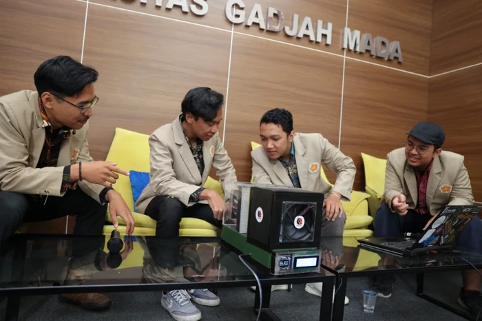

Keren! Alat Penyerap Gas Karbon Berhasil Dibuat Mahasiswa UGM & Bisa Dipantau Real Time

Jakarta - Isu perubahan iklim terus menjadi perhatian penting bagi seluruh dunia pendidikan Internasional. Tak mau ketinggalan, mahasiswa Universitas Gadjah Mada (UGM) ikut memberi ide untuk mengurangi emisi gas rumah kaca di udara.
Mahasiswa-mahasiswa UGM tersebut adalah oleh Javier Ahmad (Teknik Fisika), Wahyu T. Wicaksono (Teknik Fisika), Daffa I. Izaohar (Teknik Fisika), dan Glenshah Fauzi (Kimia).
Mereka berhasil mengembangkan sebuah teknologi yang bisa menyerap gas karbon dengan pemantauan secara real time atau langsung. Alat teknologi bernama CAPTURE itu dibuat lewat pendanaan PKM C dari Kemendikbud. "Teknologi yang kami kembangkan ini bisa menangkap gas
karbon dari udara melalui proses adsorpsi fisika dengan membran yang terbuat dari ekstrak tempurung kelapa," jelas Javier, selaku ketua tim dikutip dari laman UGM, Kamis (26/10/2023).
Javier menuturkan tujuan pembuatan CAPTURE adalah untuk mengurangi emisi gas rumah kaca dalam skala regional maupun global. Ia dan tim awalnya melihat bahwa penyerapan gas karbon yang terlepas ke atmosfer terkendala karena luasnya area penyebaran.
Kondisi tersebut bisa ditanggulangi dengan adanya alat yang bisa mengarahkan udara yang mempunyai kandungan karbon. Udara akan masuk ke dalam filter kemudian secara spesifik menangkap karbon dari udara.
Komponen yang terdapat dalam CAPTURE antara lain adsorben tempurung kelapa, filter udara, kipas exhaust, sensor karbon, kontrol, sensor kapasitif, power supply, dan layar LCD. Meski memiliki banyak komponen, namun alat ini mudah digunakan karena berukuran 40x26x20 cm.
Udara akan ditangkap lewat proses adsorpsi dengan bantuan membran yang dibuat dari ekstrak tempurung kelapa. Penggunaan tempurung kelapa sendiri dikarenakan Indonesia kaya akan sumber daya alam tersebut. "Penangkapan karbon dengan adsorpsi dianggap sebagai metode yang menjanjikan karena
konsumsi energinya yang rendah selama regenerasi, biaya investasi yang rendah, dan tidak ada polutan atau produk sampingan yang dihasilkan," terang Javier. Alasan lain dari pemanfaatan tempurung kelapa adalah karena kandungan abunya yang rendah dan mempunyai reaktivitas tinggi. Javier telah melihat
banyak riset di beberapa jurnal yang membuktikan bahwa tempurung kelapa bagus digunakan sebagai filter.
Udara akan ditangkap lewat proses adsorpsi dengan bantuan membran yang dibuat dari ekstrak tempurung kelapa. Penggunaan tempurung kelapa sendiri dikarenakan Indonesia kaya akan sumber daya alam tersebut.
"Penangkapan karbon dengan adsorpsi dianggap sebagai metode yang menjanjikan karena konsumsi energinya yang rendah selama regenerasi, biaya investasi yang rendah, dan tidak ada polutan atau produk sampingan yang dihasilkan," terang Javier.
Alasan lain dari pemanfaatan tempurung kelapa adalah karena kandungan abunya yang rendah dan mempunyai reaktivitas tinggi. Javier telah melihat banyak riset di beberapa jurnal yang membuktikan bahwa tempurung kelapa bagus digunakan sebagai filter.